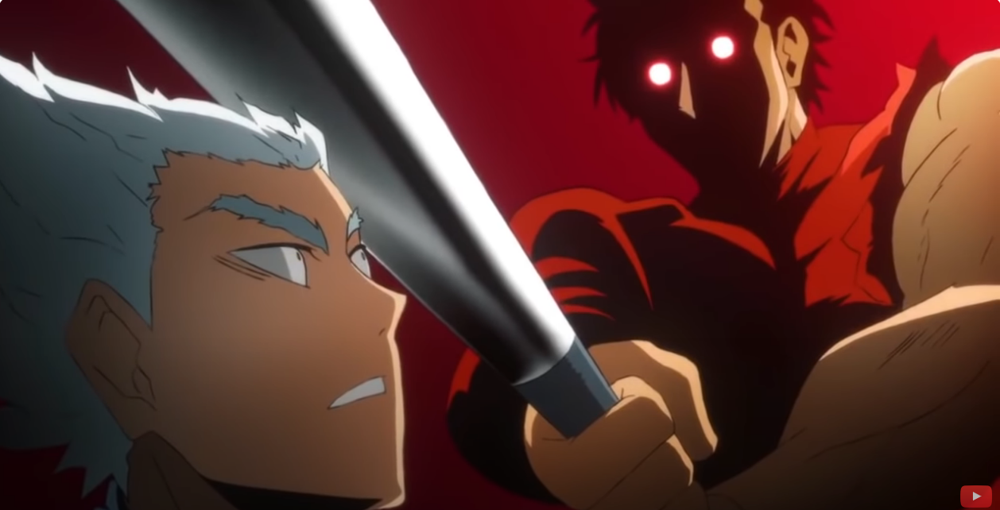

I have early acess which you can use to unlock/use charecters that is not finished yet. But you need robux. 299.
A charecter that is not finished right now is called "Brutal Demon" in the game but "Metal Bat" is it's anime name.
You can probably already tell what the charecter has for it's weapon.
If you don't know what he has, he has a Metal Bat.
Metal Bat deserves a A+++++ for it's range combo and close range
Oh, what nice Bat he has!!
Don't get him angry! He will be so mad that he smackes his own head with his bat!
You do not want to know what moves he has for his ultimate moves.
Pssst! I'll tell you the moves for Metal Bat's ultimate! 1st move: SAVAGE TORNATO it basically just spins around like a tornato and attacking multiple enemys at once.
2nd move: BRUTAL BEATDOWN. The name pretty much speaks for its self. It IS a brutal beatdown indeed! First it kicks it's bat and then catches it and starts being brutal.
3nd move: STRENGH DIFFRENCE. What it does is that he drags his bat on the floor and then if you hit someone, they go in the air and then fall down, then Metal Bat's eyes will glow red and then you smack them really hard on the stomach when the fall down and they go in the air again. And also when they fall off, they also take fall damage! It does like %62 of your HP. All though it is good, it is hard to hit the move.
HEY! YOUR NOT SUPPOSED TO TELL THEM HEADING 6!!!!!

(The Metal bat is H1 and the Garou is H6)